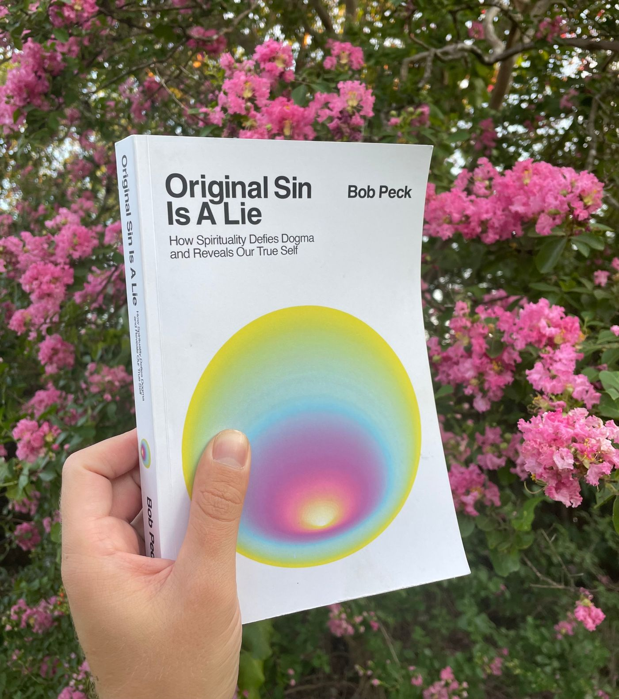
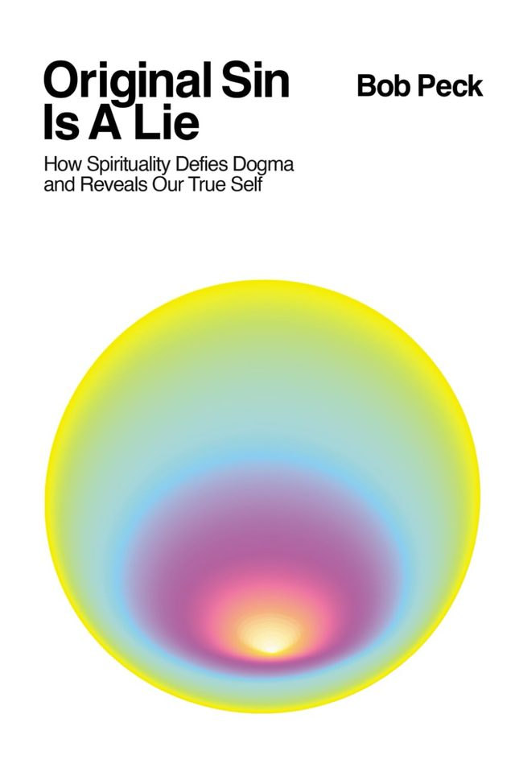
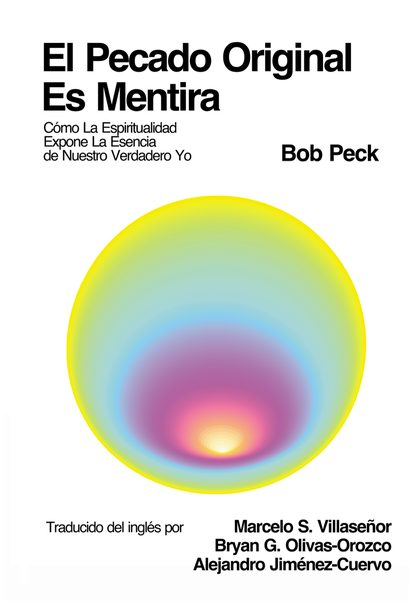
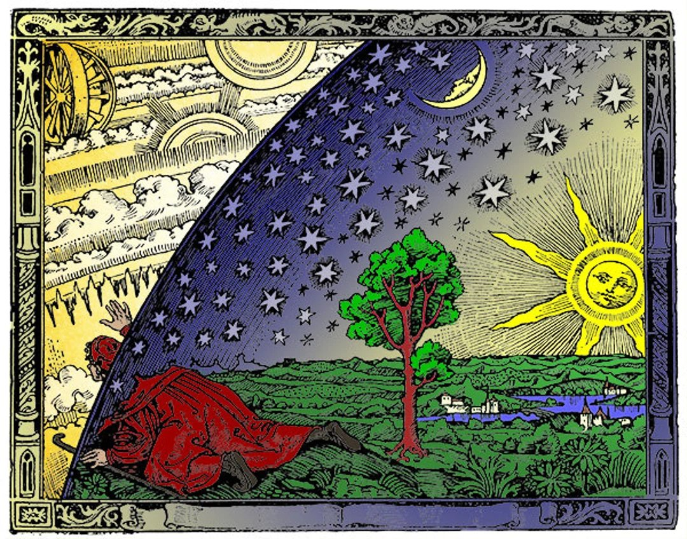

If someone sent you here, they probably care about you, and they probably know you've been sitting with some questions. That's a good sign.
Nobody here is asking you to leave anything. Not your church, not your people, and definitely not Jesus. He's worth sincere contemplation. So are the questions. This page is a quiet place to start, with a book, its main ideas in plain language, and some good company for the road.


How Spirituality Defies Dogma and Reveals Our True Self
I was raised an Easter-and-Christmas Christian in Texas, studied the New Testament at the University of Texas, and have spent twenty years reading the mystics of every tradition. This book is what came out of all that: the history of how the church got some things wrong, and why the man from Nazareth is more beautiful than the institution that grew up around him.
The digital bundle includes the ebook, the audiobook, the Spanish edition, and the study guide.

Traducido por Marcelo S. Villaseñor, Bryan G. Olivas-Orozco y Alejandro Jiménez-Cuervo.
Every one of these is sourced and footnoted in the book. None of them asks you to love Jesus any less.
The word sin doesn't appear in the Garden story, and Judaism, the tradition that wrote Genesis, has never taught it. The doctrine took shape with Augustine around 400 CE, nearly four centuries after Jesus.
The Greek word is hamartia, an archer's term. Not a permanent stain on the soul. You aimed, you missed, you aim again.
Jesus' word was metanoia, literally "beyond the mind." A call to see differently, not a sentence of lifelong shame.
Luke 17:21. The Greek entos points inward. The kingdom isn't a place you get let into later. It's already here, underneath the noise.
The word Jesus used most was Gehenna, a real valley outside Jerusalem with a dark past. The pitchforks and eternal torture came much later, from preachers and painters.
The earliest gospel was written about forty years after the crucifixion, and scholars agree on only seven of the letters signed by Paul. Knowing how the book was assembled can deepen faith rather than end it.
The mystics of every tradition, Christian, Hindu, Buddhist, Sufi, Jewish, Taoist, keep pointing at the same thing: that every being is equally Beloved, and nothing can separate us from The Divine.

"It is we who have put our hands over our eyes and cry that it is dark!" Swami Vivekananda
A study guide and journal for reading the book alone or in a small group. Twenty chapters of anchors, journal prompts, and ways to take it further, plus group agreements and session plans for six, twelve, or twenty-one weeks. Good for a friend, a cousin, a Sunday school class that likes the hard questions.
The books that shaped this one, across every tradition, with notes on where to start.
EssayJesus as big brother of humanity, and what the Second Coming might really mean.
EssayOn "born again" as a mystical symbol, and the backflips of the only-way crowd.
PodcastA long conversation with Aubrey Marcus on original sin, Augustine, and keeping Jesus close.
VideoExcerpts from the book, meditations, conversations, and documentaries.
SubstackEvery essay, from hell as a state of mind to the mystics who stood up to kings.
You don't have to walk this alone, and you don't have to walk away from Christianity to walk it.
Richard Rohr's home for Christian mysticism. Free daily meditations by email.
PracticeThomas Keating's centering prayer, with groups that meet all over the world.
East meets WestParamahansa Yogananda's teachings, including his reading of the Gospels as a mystic.
The historyA leading New Testament scholar who writes for regular people about how the Bible came to be.